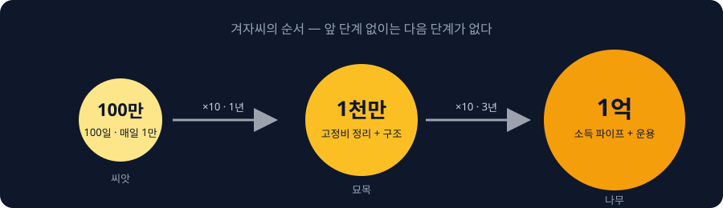
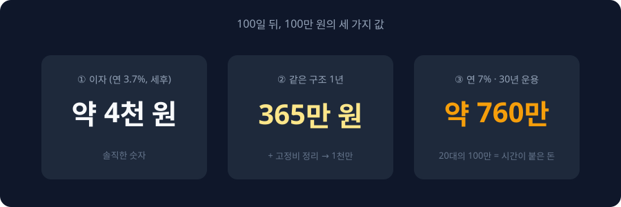

0:00훅
이자 4천 원 받으려고 100일 동안 매일 만 원씩 넣으라고 하면, 하시겠습니까.
저는 하라고 말씀드릴 겁니다.
이자 때문이 아닙니다. 100만 원을 못 모은 사람이 1억을 모은 경우를, 저는 한 번도 본 적이 없기 때문입니다.
오늘은 생애 첫 적금입니다. 100일에 100만 원. 적금은 뭘 고를지, 하루 만 원은 어디서 뺄지, 그리고 100일 뒤에 그 100만 원이 결국 얼마가 되는지까지 말씀드리겠습니다.
0:40왜 100만 원인가 — 겨자씨
뿌요입니다.
지난 영상에서 1년 1천만 원, 3년 1억을 말씀드렸습니다. 그런데 댓글에 이런 분들이 많았습니다. "1천만 원은커녕 적금 한 번 안 해봤다."
괜찮습니다. 오늘은 그분들을 위한 영상입니다. 목표를 100만 원으로 낮추겠습니다. 대신 조건이 하나 있습니다. 100일 안에, 반드시 끝까지.
왜 100만 원이냐. 100만 원은 돈이 아니라 씨앗이기 때문입니다.

겨자씨는 가장 작은 씨앗입니다. 그런데 심으면 나무가 됩니다. 100만 원이 그 겨자씨입니다. 100만 원을 모은 사람은 1천만 원을 모을 수 있고, 1천만 원을 모은 사람은 1억을 모을 수 있습니다. 순서가 정해져 있습니다.
반대로 말하면, 100만 원을 못 모으는 사람은 1억을 못 모읍니다. 소득이 늘어도 못 모읍니다. 돈이 모이는 구조가 없기 때문입니다.
이 영상의 목표는 100만 원이 아닙니다. '나는 돈을 끝까지 모아본 사람이다'라는 첫 기록입니다. 그 기록이 있어야 다음 단계가 열립니다.
2:00적금 고르기 — 기준 3개, 후보 3개
먼저 적금을 고르겠습니다. 금리 높은 거 찾지 마세요. 첫 적금은 금리로 고르는 게 아닙니다. 끝까지 갈 수 있는 구조로 고릅니다.
기준은 세 가지입니다.
첫째, 매일 넣을 수 있어야 합니다. 월 1회 납입 상품은 첫 적금에 맞지 않습니다. 한 번 빠지면 그 달이 통째로 사라지기 때문입니다.
둘째, 자동이체가 돼야 합니다. 내 손으로 넣는 적금은 100일을 못 갑니다. 의지력은 2주면 끝납니다.
셋째, 앱에서 1분 안에 가입돼야 합니다. 지점 가야 하는 상품은 가입 전에 포기합니다.
이 세 가지에 맞는 후보가 셋 있습니다.
하나, 카카오뱅크 자유적금. 매일, 매주, 매월 원하는 주기로 넣을 수 있고, 기본금리가 연 3.7퍼센트대로 인터넷은행 중 상위권입니다.
둘, 토스뱅크 굴비적금. 매일 저축하는 구조로 설계된 상품입니다. 6개월 만기를 채우면 최고금리를 주고, 월 30만 원까지 넣을 수 있습니다.
셋, 케이뱅크 코드K 자유적금. 역시 기본금리 3.7퍼센트 안팎이고 자유납입입니다.
카카오뱅크 26주적금은 유명하지만 오늘 목표엔 안 맞습니다. 매주 납입액이 늘어나는 구조라, 만 원으로 시작하면 마지막 주에는 26만 원을 넣어야 합니다. 첫 적금에는 부담이 큽니다.
오늘은 하나로 정하겠습니다. 위 셋 중 이미 쓰는 은행 앱의 자유적금. 만기는 6개월로 열고, 매일 만 원 자동이체를 겁니다. 100일째에 100만 원이 찍힙니다. 6개월로 여는 이유는 마지막에 말씀드리겠습니다.
금리는 매일 바뀝니다. 가입 직전에 앱에서 숫자를 다시 보세요. 다만 첫 적금에서 0.2퍼센트 차이는 이자 천 원 차이입니다. 그 천 원 때문에 고민하다 가입을 미루는 게 훨씬 큰 손해입니다.
4:00하루 만 원은 어디서 나오는가 — 새는 돈 찾기
이제 진짜 문제입니다. 하루 만 원이 어디서 나오느냐.
새로 벌지 않습니다. 새는 돈을 막습니다. 대부분의 사람은 본인이 하루에 만 원 이상을 '기억나지 않는 곳'에 쓰고 있습니다.
찾는 방법은 하나입니다. 딱 3일만 기록하세요.
카드든 현금이든, 결제할 때마다 메모 앱에 금액과 한 단어만 적습니다. "4,500 커피", "12,000 배달", "3,000 편의점". 사흘이면 됩니다. 사흘 뒤에 그 목록을 보면 세 가지가 보입니다.
첫째, 같은 항목이 반복됩니다. 그게 습관 지출입니다.
둘째, 결제 직후에 이미 후회한 항목이 있습니다. 그게 충동 지출입니다.
셋째, 뭘 샀는지 기억이 안 나는 항목이 있습니다. 그게 새는 돈입니다.
이 셋 중에 하루 만 원은 반드시 나옵니다. 20대 기준으로 가장 많이 나오는 곳은 세 군데입니다. 배달, 편의점, 택시.
절약 방법도 세 가지만 말씀드리겠습니다. 전부 다 하려고 하지 마세요. 하나만 고르세요.
하나, 무결제 카테고리 한 개. 지난 영상에서도 말씀드렸습니다. 배달이면 배달, 택시면 택시. 100일 동안 그 카테고리만 0원으로 만듭니다.
둘, 배달을 포장으로. 같은 음식을 먹으면서 배달비와 최소주문 채우기가 사라집니다. 한 끼에 5천 원 안팎이 남습니다.
셋, 현금 만 원 규칙. 아침에 현금 만 원만 들고 나가고 카드는 집에 둡니다. 하루 지출 상한선이 물리적으로 생깁니다. 극단적이지만, 100일 한정으로는 가장 확실한 방법입니다.
6:30넣는 방식 — 매일이 정답인 이유
넣는 방식은 세 가지가 있습니다. 매일 만 원, 매주 7만 원, 매월 30만 원.
첫 적금은 매일입니다. 이유는 간단합니다. 매월 30만 원은 월급날 통장에 30만 원이 있어야 하는데, 저축을 안 해본 사람 통장에는 월급날에도 30만 원이 없습니다. 매주 7만 원도 주말에 한 번 크게 쓰면 무너집니다.
매일 만 원은 실패해도 만 원입니다. 하루 빠지면 다음 날 2만 원을 넣으면 됩니다. 복구가 됩니다. 이게 핵심입니다. 첫 적금은 성공하는 구조가 아니라, 실패해도 복구되는 구조로 만들어야 합니다.
자동이체 시간은 새벽으로 잡으세요. 월급통장에서 새벽 5시에 만 원이 빠져나가면, 아침에 일어났을 땐 이미 저축이 끝나 있습니다. 하루 종일 그 만 원은 처음부터 없던 돈입니다.
그리고 하나 더. 적금 앱 알림을 끄지 마세요. 매일 "만 원이 입금됐습니다" 알림이 100번 쌓입니다. 그 100번의 알림이, 사실은 100만 원보다 중요합니다. 뇌가 '나는 매일 돈을 모으는 사람'이라고 100번 듣게 되기 때문입니다.
8:00100일 뒤, 100만 원은 얼마가 되나
솔직하게 계산하겠습니다.
매일 만 원씩 100일, 연 3.7퍼센트 기준으로 이자는 약 5천 원입니다. 세금 떼면 4천 원 남짓입니다. 처음에 말씀드린 그 4천 원입니다.
실망하셨을 겁니다. 그런데 이 100만 원의 가치는 이자에 있지 않습니다.
첫째, 이 100만 원은 다음 100만 원을 만듭니다. 100일 동안 하루 만 원을 뺄 곳을 찾아낸 사람은, 이제 그 구조를 그대로 두면 됩니다. 같은 구조로 1년이면 365만 원입니다. 여기에 지난 영상의 고정비 정리를 얹으면 1년 1천만 원이 됩니다. 100만 원이 1천만 원의 씨앗이라는 게 이 뜻입니다.
둘째, 이 100만 원을 안 쓰고 굴리면 어떻게 되느냐. 연 7퍼센트로 30년이면 약 760만 원입니다. 20대에 만든 100만 원은 그냥 100만 원이 아닙니다. 시간이 붙어 있는 100만 원입니다.

그리고 셋째. 아까 6개월 만기로 열라고 한 이유입니다. 100일에 100만 원을 찍고 나서, 그 적금을 깨지 마세요. 그대로 두고 다음 영상으로 넘어옵니다.
9:00실행 과제 · 3화 예고 · 구독
오늘 과제는 하나입니다.
지금 은행 앱을 열고 자유적금을 만드세요. 매일 만 원, 새벽 자동이체. 가입 완료 화면을 캡처해서 날짜와 함께 댓글에 "1일차"라고 적어주세요. 100일 뒤에 "100일차" 댓글을 단 분들을 제가 직접 정리하겠습니다.
다음 영상은 '연쇄적금러'입니다.
오늘 만든 적금 하나가 100일을 넘기면, 두 번째 적금을 엽니다. 매주 하나씩 적금을 늘려서 만기가 매주 돌아오게 만드는 구조입니다. 100만 원짜리 씨앗이 어떻게 1천만 원으로 커지는지, 그 방법을 3화에서 다룹니다.
100일, 100만 원. 이 첫 번째 씨앗부터 같이 심을 분들은 구독해 두시면 됩니다.
뿌요였습니다.